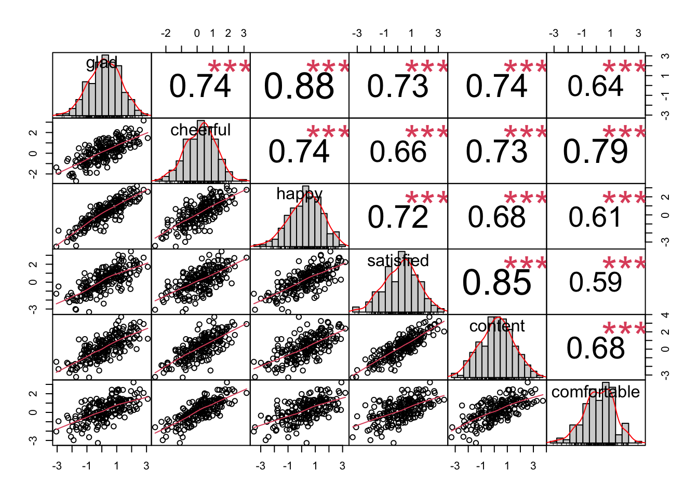

Chapter 13 Week11_1: Lavaan Lab 10 Model Fit Part II (Fit Indices)
In this lab, we will learn:
- how to calculate and interpret global fit indices for SEM models.
- how to compare non-nested models using AIC and BIC.
Load up the lavaan library:
library(lavaan)13.1 PART I: Fit Indices
Let’s read this dataset in:
cfaData<- read.csv("cfaInclassData.csv", header = T)Write out syntax for a two-factor CFA model:
fixedIndTwoFacSyntax <- "
#Factor Specification
posAffect =~ glad + happy + cheerful
satisfaction =~ satisfied + content + comfortable
"Fit the model regularly:
fixedIndTwoFacRun = lavaan::sem(model = fixedIndTwoFacSyntax,
data = cfaData,
fixed.x=FALSE)Request fit indices by adding fit.measures = T in the summary() function:
summary(fixedIndTwoFacRun, standardized = T, fit.measures = T)## lavaan 0.6-12 ended normally after 24 iterations
##
## Estimator ML
## Optimization method NLMINB
## Number of model parameters 13
##
## Number of observations 1000
##
## Model Test User Model:
##
## Test statistic 2.957
## Degrees of freedom 8
## P-value (Chi-square) 0.937
##
## Model Test Baseline Model:
##
## Test statistic 2020.010
## Degrees of freedom 15
## P-value 0.000
##
## User Model versus Baseline Model:
##
## Comparative Fit Index (CFI) 1.000
## Tucker-Lewis Index (TLI) 1.005
##
## Loglikelihood and Information Criteria:
##
## Loglikelihood user model (H0) -7483.272
## Loglikelihood unrestricted model (H1) -7481.793
##
## Akaike (AIC) 14992.544
## Bayesian (BIC) 15056.345
## Sample-size adjusted Bayesian (BIC) 15015.056
##
## Root Mean Square Error of Approximation:
##
## RMSEA 0.000
## 90 Percent confidence interval - lower 0.000
## 90 Percent confidence interval - upper 0.009
## P-value RMSEA <= 0.05 1.000
##
## Standardized Root Mean Square Residual:
##
## SRMR 0.007
##
## Parameter Estimates:
##
## Standard errors Standard
## Information Expected
## Information saturated (h1) model Structured
##
## Latent Variables:
## Estimate Std.Err z-value P(>|z|) Std.lv
## posAffect =~
## glad 1.000 0.694
## happy 1.067 0.055 19.294 0.000 0.740
## cheerful 1.112 0.057 19.458 0.000 0.772
## satisfaction =~
## satisfied 1.000 0.773
## content 1.068 0.052 20.525 0.000 0.826
## comfortable 0.918 0.045 20.336 0.000 0.709
## Std.all
##
## 0.706
## 0.758
## 0.785
##
## 0.767
## 0.762
## 0.746
##
## Covariances:
## Estimate Std.Err z-value P(>|z|) Std.lv
## posAffect ~~
## satisfaction 0.262 0.025 10.284 0.000 0.488
## Std.all
##
## 0.488
##
## Variances:
## Estimate Std.Err z-value P(>|z|) Std.lv
## .glad 0.484 0.029 16.647 0.000 0.484
## .happy 0.405 0.028 14.389 0.000 0.405
## .cheerful 0.371 0.029 13.004 0.000 0.371
## .satisfied 0.419 0.029 14.326 0.000 0.419
## .content 0.491 0.034 14.542 0.000 0.491
## .comfortable 0.400 0.026 15.315 0.000 0.400
## posAffect 0.482 0.042 11.439 0.000 1.000
## satisfaction 0.597 0.047 12.686 0.000 1.000
## Std.all
## 0.501
## 0.425
## 0.384
## 0.412
## 0.419
## 0.443
## 1.000
## 1.00013.1.1 RMSEA
Root Mean Square Error of Approximation:
RMSEA 0.000
90 Percent confidence interval - lower 0.000
90 Percent confidence interval - upper 0.009
P-value RMSEA <= 0.05 1.000reproducing RMSEA:
- T = 2.957
- df = 8
- N = 1000
- RMSEA = sqrt(max(T-df,0)/(N-1)/df) = sqrt(max(2.957-8,0)/(1000-1)/8) = 0
13.1.2 SRMR
Standardized Root Mean Square Residual:
SRMR 0.007reproducing SRMR:
S = cov(cfaData[,-1])
colnames = colnames(S)
SIGMA = fitted(fixedIndTwoFacRun)$cov[colnames, colnames]
p = ncol(S)
# use cov2cor() function to convert diff to a correlation matrix and standardize the residuals:
resd = cov2cor(S) - cov2cor(SIGMA)
# keep only the nonduplicated elements:
resd2 = lav_matrix_vech(resd)
sqrt(sum(resd2^2)/(p*(p+1)/2))## [1] 0.006847801- A small average standardized residual…looks good
13.1.3 Null Model MO
Model Test Baseline Model:
Test statistic 2020.010
Degrees of freedom 15
P-value 0.000- This is the chi_sq for the baseline model used in the CFI/TLI/comparative fit measures.
- We know what this means now!
- chisquare of the null model: 2020.010
- df of the null model: 15
reproducing M0:
baselineM0 <- "
glad ~~ glad
happy ~~ happy
cheerful ~~ cheerful
satisfied ~~ satisfied
content ~~ content
comfortable ~~ comfortable
"
base_fit <- lavaan::sem(baselineM0, data = cfaData, fixed.x = FALSE)
base_fit## lavaan 0.6-12 ended normally after 12 iterations
##
## Estimator ML
## Optimization method NLMINB
## Number of model parameters 6
##
## Number of observations 1000
##
## Model Test User Model:
##
## Test statistic 2020.010
## Degrees of freedom 15
## P-value (Chi-square) 0.00013.1.4 CFI/TLI
User Model versus Baseline Model:
Comparative Fit Index (CFI) 1.000
Tucker-Lewis Index (TLI) 1.005- 100% improvement over the null(baseline) model … great fit
- Here TLI is larger than 1 because this is a rare situation with chisquare=2.957<df=8
- numerator of TLI = (2020.010/15-2.957/8) = 134.2977
- denominator of TLI = (2020.010/15-1) = 133.6673
- TLI = 134.2977 / 133.6673 = 1.005
- A TLI that is larger than 1 is no different from TLI = 1
great overall fit.
13.1.5 Loglikelihood
Loglikelihood and Information Criteria:
Loglikelihood user model (H0) -7483.272
Loglikelihood unrestricted model (H1) -7481.793- H0 is the loglikelihood of your model (user model … lavaan is kind to clarify this)
- H1 is the saturated model loglikelihood.
13.1.6 AIC/BIC
Akaike (AIC) 14992.544
Bayesian (BIC) 15056.345
Sample-size adjusted Bayesian (BIC) 15015.056- Penalized -2 LogL
- If these are lower than some other model -> prefer this model.
- If these are higher than some other model -> prefer the other model.
reproducing AIC/BIC:
logLik = -7483.272
q = 13 # (4 loadings + 6 unique factor variances + 3 factor var/covs)
N = 1000
(AIC = -2*logLik + 2*q)## [1] 14992.54(BIC = -2*logLik + log(N)*q)## [1] 15056.3413.2 PART II: Exercise
For this portion, we will run the CFA analyses on a new simulated dataset based on Todd Little’s positive affect example.
Read in the new dataset:
affectData_new <- read.csv("ChiStatSimDat.csv", header = T)Examine the dataset:
head(affectData_new)## glad cheerful happy satisfied content
## 1 -0.88164396 0.08934146 -0.02412456 -0.570588909 0.3525594
## 2 -0.05250507 0.68355268 0.74157736 0.146592063 0.5393570
## 3 1.87921754 0.84984042 2.87784843 0.279073394 1.1723201
## 4 -0.22371928 0.10069522 -0.19760745 -0.063127288 -1.1782493
## 5 0.17341853 0.26949455 -0.49326121 0.237083760 -1.0066170
## 6 -1.03348018 0.04250862 -1.00909832 0.009657695 0.4366756
## comfortable
## 1 0.59309666
## 2 1.12686970
## 3 0.26855073
## 4 -0.59893739
## 5 -0.04426791
## 6 0.05996283Examine the covariance matrix:
cov(affectData_new)## glad cheerful happy satisfied content
## glad 1.4049090 0.9262102 1.3859992 1.1088378 1.200695
## cheerful 0.9262102 1.1043581 1.0344850 0.8850550 1.053458
## happy 1.3859992 1.0344850 1.7737439 1.2253205 1.233110
## satisfied 1.1088378 0.8850550 1.2253205 1.6365917 1.496492
## content 1.2006950 1.0534583 1.2331099 1.4964919 1.872718
## comfortable 0.8715664 0.9513925 0.9317963 0.8626294 1.069361
## comfortable
## glad 0.8715664
## cheerful 0.9513925
## happy 0.9317963
## satisfied 0.8626294
## content 1.0693608
## comfortable 1.3162770all positive! (Remember that indicators need to be all positively correlated for CFA models?)
13.2.1 PART I: Plot the distributions of all indicators
library(PerformanceAnalytics)
chart.Correlation(affectData_new)
all indicators look roughly normal
13.2.2 PART II: Write out the model syntax for two-factor model
twofa.model <- "
#Factor Specification
posAffect =~ glad + happy + cheerful
satisfaction =~ satisfied + content + comfortable
"13.2.3 PART III: Fit the two-factor model
new_fit = lavaan::sem(twofa.model, data = affectData_new, fixed.x=FALSE)
summary(new_fit, standardized = T, fit.measures = T)## lavaan 0.6-12 ended normally after 29 iterations
##
## Estimator ML
## Optimization method NLMINB
## Number of model parameters 13
##
## Number of observations 200
##
## Model Test User Model:
##
## Test statistic 113.638
## Degrees of freedom 8
## P-value (Chi-square) 0.000
##
## Model Test Baseline Model:
##
## Test statistic 1168.055
## Degrees of freedom 15
## P-value 0.000
##
## User Model versus Baseline Model:
##
## Comparative Fit Index (CFI) 0.908
## Tucker-Lewis Index (TLI) 0.828
##
## Loglikelihood and Information Criteria:
##
## Loglikelihood user model (H0) -1413.224
## Loglikelihood unrestricted model (H1) -1356.405
##
## Akaike (AIC) 2852.449
## Bayesian (BIC) 2895.327
## Sample-size adjusted Bayesian (BIC) 2854.141
##
## Root Mean Square Error of Approximation:
##
## RMSEA 0.257
## 90 Percent confidence interval - lower 0.216
## 90 Percent confidence interval - upper 0.300
## P-value RMSEA <= 0.05 0.000
##
## Standardized Root Mean Square Residual:
##
## SRMR 0.070
##
## Parameter Estimates:
##
## Standard errors Standard
## Information Expected
## Information saturated (h1) model Structured
##
## Latent Variables:
## Estimate Std.Err z-value P(>|z|) Std.lv
## posAffect =~
## glad 1.000 1.115
## happy 1.095 0.048 22.882 0.000 1.221
## cheerful 0.763 0.046 16.739 0.000 0.851
## satisfaction =~
## satisfied 1.000 1.152
## content 1.110 0.054 20.462 0.000 1.278
## comfortable 0.715 0.057 12.548 0.000 0.823
## Std.all
##
## 0.943
## 0.919
## 0.812
##
## 0.902
## 0.936
## 0.719
##
## Covariances:
## Estimate Std.Err z-value P(>|z|) Std.lv
## posAffect ~~
## satisfaction 1.104 0.131 8.425 0.000 0.859
## Std.all
##
## 0.859
##
## Variances:
## Estimate Std.Err z-value P(>|z|) Std.lv
## .glad 0.154 0.031 4.966 0.000 0.154
## .happy 0.274 0.043 6.398 0.000 0.274
## .cheerful 0.374 0.042 8.851 0.000 0.374
## .satisfied 0.302 0.047 6.492 0.000 0.302
## .content 0.230 0.048 4.742 0.000 0.230
## .comfortable 0.632 0.068 9.253 0.000 0.632
## posAffect 1.244 0.142 8.790 0.000 1.000
## satisfaction 1.326 0.164 8.093 0.000 1.000
## Std.all
## 0.110
## 0.155
## 0.341
## 0.186
## 0.123
## 0.482
## 1.000
## 1.00013.2.4 PART IV: Interpret the chisquare statistic and fit indices
Model Test User Model:
Test statistic 113.638
Degrees of freedom 8
P-value (Chi-square) 0.000- 113.638 is much larger than df=8 and the p-value is 0.000<0.05,
- This chisquare is too large and the model is a poor fit.
Root Mean Square Error of Approximation:
RMSEA 0.257
90 Percent confidence interval - lower 0.216
90 Percent confidence interval - upper 0.300
P-value RMSEA <= 0.05 0.000
Standardized Root Mean Square Residual:
SRMR 0.070
User Model versus Baseline Model:
Comparative Fit Index (CFI) 0.908
Tucker-Lewis Index (TLI) 0.828- RMSEA = 0.257 >> 0.1. The lower bound of the confidence interval is also larger than 0.1. This indicates a poor fit.
- P-value RMSEA <= 0.05: sig - close fit null hypothesis rejected.
- SRMR = 0.07 < 0.08, meaning that the average standardized residual between S and Sigma is no larger than 0.08, but SRMR is known to be lenient (i.e., low SRMR =/= good models, but high SRMR = bad models).
- 90.8% improvement over the null model … marginal fit